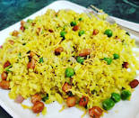
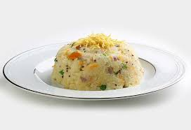

Ingredients: Made from Thick Poha (Flattened Rice), Vegetable oil and roasted peanuts with cilantro and a zest of fresh lemnon juice.
Is custom made to include a variety of seasonal vegetables such as onion, potato, green peas, green chick peas, tomatoes and eggplant.

Ingredients: Coarse sooji roasted slighty on vegetable oil. Chopped red onions, fresh curry leaves, cashews, udal daal and green chillies added to the tempering for a flavorful dish.
A variety of seasonal vegetables such as tomatoes, green peas, cauliflower, carrots and corn can be added to give a different flavor.

Ingredients: Bolied potatoes cooked with spicy green chillies, fresh ginger, cilantro and lemon juice. Dipped in chick pea flour batter and deep fried till golden brown.
Served with green cilantro chutney.
Ingredients: Made from udad daal. Spices such as fresh whole black pepper, cumin seeds, curry leaves, fresh ginger, coconut, cilantro and green chillies added to the batter and deep fried to make fluffy wadas.
Served with coconut chutney and sambaar.